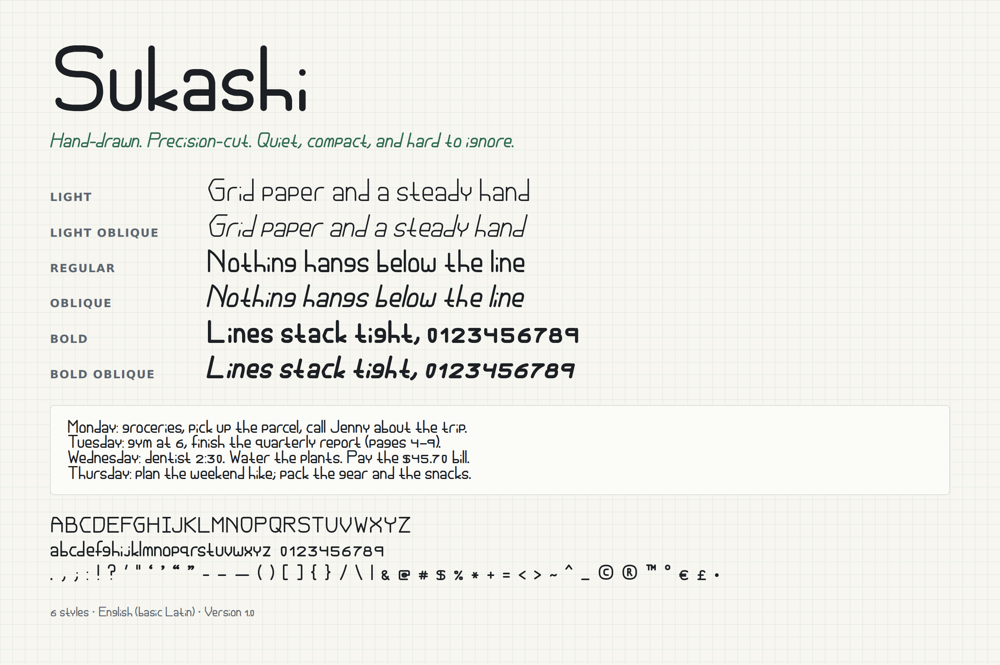

Grid paper and a steady hand
LightNothing hangs below the line
RegularLines stack tight, 0123456789
BoldQuiet, compact, hard to ignore
Where it came from
Every letter started as a pencil drawing on metric grid paper. Capitals line up to a guide just above the middle of the letter, lowercase to a guide just below it, which is what gives the face its pointed C and low crossbars.
What it's good for
Because nothing drops below the baseline, Sukashi packs into short line heights: journals, planners, labels, notes, and text that follows a curve. It works in cutting machines like Cricut and Silhouette.
What's included
- Six styles: Light, Regular and Bold, each with an Oblique slanted 13 degrees
- A–Z, a–z, 0–9 and common punctuation and symbols
- English only for now. Accented letters are planned.
- Every 1.x update is free
